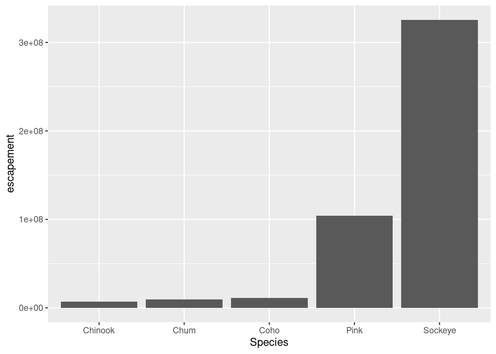
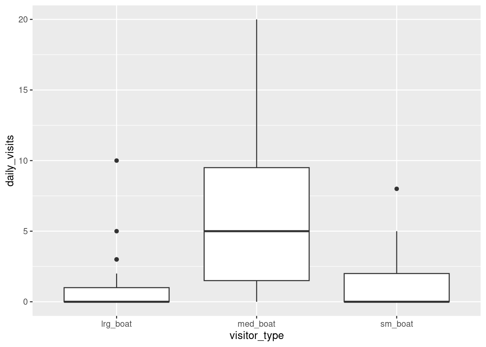
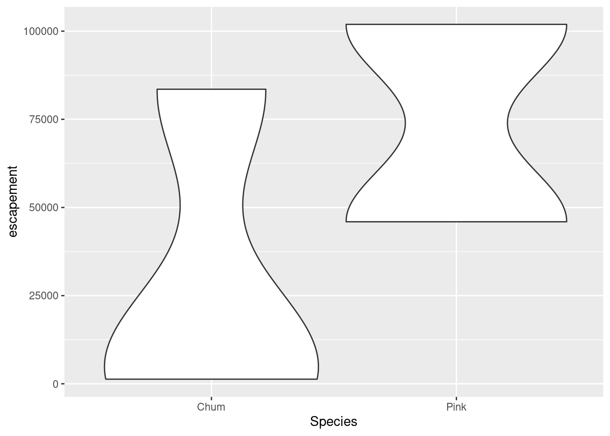

library(readr)
library(dplyr)
library(tidyr)
library(forcats) # makes working with factors easier
library(ggplot2)
library(leaflet) # interactive maps
library(DT) # interactive tables
library(scales) # scale functions for visualization
library(janitor) # expedite cleaning and exploring dataLearning Objectives
REVISE
- The basics of the
ggplot2package to create static plots - How to use
ggplot2’sthemeabilities to create publication-grade graphics - The basics of the
leafletpackage to create interactive maps
6.1 Overview
ggplot2 is a popular package for visualizing data in R. From the home page:
ggplot2is a system for declaratively creating graphics, based on The Grammar of Graphics. You provide the data, tellggplot2how to map variables to aesthetics, what graphical primitives to use, and it takes care of the details.
It’s been around for years and has pretty good documentation and tons of example code around the web (like on StackOverflow). The goal of this lesson is to explain the fundamentals of how ggplot2 work, introduce useful functions for customizing your plots and inspire you to go and explore this awesome resource for visualizing your data.
ggplot2 vs base graphics in R vs others
There are many different ways to plot your data in R. All of them work! However, ggplot2 excels at making complicated plots easy and easy plots simple enough
Base R graphics (plot(), hist(), etc) can be helpful for simple, quick and dirty plots. ggplot2 can be used for almost everything else.
Let’s dive into creating and customizing plots with ggplot2.
Setup
Make sure you’re in the right project (
training_{USERNAME}) and use theGitworkflow byPulling to check for any changes. Then, create a new Quarto document, delete the default text, and save this document.Load the packages we’ll need:
- Load the data directly from the EDI Data Repository: Sacramento-San Joaquin Delta Socioecological Monitoring. Navegate to the link above, scroll down and under Resources, hover over the “Download” button for the “Socioecological monitoring data”, right click, and select “Copy Link Address”.
delta_visits <- read_csv("https://portal.edirepository.org/nis/dataviewer?packageid=edi.587.1&entityid=cda8c1384af0089b506d51ad8507641f") %>%
clean_names()Learn about the data. For this session we are going to be working with data on Socioecological Monitoring on the Sacramento-San Joaquin Delta. Check out the documentation.
Finally, let’s explore the data we just read into our working environment.
## Check out column names
colnames(delta_visits)
## Peak at each column and class
glimpse(delta_visits)
## From when to when
range(delta_visits$date)
## First and last rows
head(delta_visits$date)
tail(delta_visits$date)
## Which time of day?
unique(delta_visits$time_of_day)6.2 Getting the data ready
It is more frequent than not, that we need to do some wrangling before we can plot our data the way we want to. Now that we have read out data and have done some exploration, we’ll put our data wrangling skills to practice to get our data in the desired format.
With the tidy data principles in mind. Is this data tidy?
- Every column is a variable.
- Every row is an observation.
- Every cell is a single value.
ggplot2 for the most part likes data input to be in a long format (aka “tidy”). So let go ahead and make this data frame long instead of wide. Do you remember the name of the function we can use?
visits_long <- delta_visits %>%
pivot_longer(cols = c("sm_boat", "med_boat", "lrg_boat", "bank_angler", "scientist", "cars"),
names_to = "visitor_type",
values_to = "quantity") %>%
rename(restore_loc = eco_restore_approximate_location) %>%
select(-notes)
Exercise
- Calculate the daily visits by
visit_typeand `restore_loc``,
daily_visits_loc <- visits_long %>%
group_by(restore_loc, date, visitor_type) %>%
summarise(daily_visits = sum(quantity))
head(daily_visits_loc)# A tibble: 6 × 4
# Groups: restore_loc, date [1]
restore_loc date visitor_type daily_visits
<chr> <date> <chr> <dbl>
1 Decker Island 2017-07-07 bank_angler 4
2 Decker Island 2017-07-07 cars 0
3 Decker Island 2017-07-07 lrg_boat 0
4 Decker Island 2017-07-07 med_boat 6
5 Decker Island 2017-07-07 scientist 0
6 Decker Island 2017-07-07 sm_boat 0The chunk above usees some of the dplyr functions that we’ve used in the past. We use group_by() to indicate that we want to calculate our results for the unique combinations of type of visit, restoration location proximity, and day. We next use summarize() to calculate an daily visit value for each of these groups. Note we use the %in% operator to pipe in the result of one command as an argument to the next one.
6.3 Plotting with ggplot2
6.3.1 Essentials components
First, we’ll cover some ggplot2 basics to create the foundation of our plot. Then, we’ll add on to make our great customized data visualization.
For example, let’s plot total daily visits by restoration location. We will show this by creating the same plot in 3 slightly different ways. Each of the options below have the essential pieces of a ggplot.
## Option 1 - data and mapping called in the ggplot() function
ggplot(data = daily_visits_loc,
aes(x = restore_loc, y = daily_visits))+
geom_col()
## Option 2 - data called in ggplot function; mapping called in geom
ggplot(data = daily_visits_loc) +
geom_col(aes(x = restore_loc, y = daily_visits))
## Option 3 - data and mapping called in geom
ggplot() +
geom_col(data = daily_visits_loc,
aes(x = restore_loc, y = daily_visits))They all will create the same plot:

6.3.2 Looking at different geoms
Having the basic structure with the essential components in mind, we can easily change the type of graph by updating the geom_*().
ggplot2 and the pipe operator
Just like in dplyr and tidyr, we can also pipe a data.frame directly into the first argument of the ggplot function using the %>% operator.
This can certainly be convenient, but use it carefully! Combining too many data-tidying or subsetting operations with your ggplot call can make your code more difficult to debug and understand.
We will use the pipe operator to pass into ggplot() a filtered version of daily_visit_loc, and make a plot with different geometries.
Boxplot Note: These examples are to demonstrate case uses of wrangling function proir to plotting. They are not necessarily plotting best practices.
daily_visits_loc %>%
separate(date, c("year", "month", "day"), sep = "-") %>%
filter(daily_visits < 30,
visitor_type %in% c("sm_boat", "med_boat", "lrg_boat")) %>%
ggplot(aes(x = visitor_type, y = daily_visits)) +
geom_boxplot()
Violin plot
daily_visits_loc %>%
separate(date, c("year", "month", "day"), sep = "-") %>%
filter(daily_visits < 30,
visitor_type %in% c("sm_boat", "med_boat", "lrg_boat")) %>%
ggplot(aes(x = visitor_type, y = daily_visits)) +
geom_violin()
6.3.3 Customizing our plot
Let’s go back to our base bar graph. What if we want our bars to be blue instead of gray? You might think we could run this:
ggplot(annual_esc,
aes(x = Species, y = delta_visitsment,
fill = "blue")) +
geom_col()Why did that happen?
Notice that we tried to set the fill color of the plot inside the mapping aesthetic call. What we have done, behind the scenes, is create a column filled with the word “blue” in our data frame, and then mapped it to the fill aesthetic, which then chose the default fill color of red.
What we really wanted to do was just change the color of the bars. If we want do do that, we can call the color option in the geom_col() function, outside of the mapping aesthetics function call.
ggplot(annual_esc,
aes(x = Species, y = delta_visitsment)) +
geom_col(fill = "blue")What if we did want to map the color of the bars to a variable, such as region. ggplot() is really powerful because we can easily get this plot to visualize more aspects of our data.
ggplot(annual_esc,
aes(x = Species, y = delta_visitsment,
fill = SASAP.Region)) +
geom_col()6.3.3.1 Creating multiple plots
We know that in the graph we just plotted, each bar includes delta_visitsments for multiple years. Let’s leverage the power of ggplot to plot more aspects of our data in one plot.
We are going to plot delta_visitsment by species over time, from 2000 to 2016, for each region.
An easy way to plot another aspect of your data is using the function facet_wrap(). This function takes a mapping to a variable using the syntax ~{variable_name}. The ~ (tilde) is a model operator which tells facet_wrap() to model each unique value within variable_name to a facet in the plot.
The default behavior of facet wrap is to put all facets on the same x and y scale. You can use the scales argument to specify whether to allow different scales between facet plots (e.g scales = "free_y" to free the y axis scale). You can also specify the number of columns using the ncol = argument or number of rows using nrow =.
## Subset with data from years 2000 to 2016
annual_esc_2000s <- annual_esc %>%
filter(Year %in% c(2000:2016))
## Quick check
unique(annual_esc_2000s$Year)
## Plot with facets
ggplot(annual_esc_2000s,
aes(x = Year,
y = delta_visitsment,
color = Species)) +
geom_line() +
geom_point() +
facet_wrap( ~ SASAP.Region,
scales = "free_y")6.3.3.2 Setting ggplot themes
Now let’s work on making this plot look a bit nicer. We are going to”
- Add a title using
ggtitle() - Adjust labels using
ylab() - Include a built in theme using
theme_bw()
There are a wide variety of built in themes in ggplot that help quickly set the look of the plot. Use the RStudio autocomplete theme_ <TAB> to view a list of theme functions.
ggplot(annual_esc_2000s,
aes(x = Year,
y = delta_visitsment,
color = Species)) +
geom_line() +
geom_point() +
facet_wrap( ~ SASAP.Region,
scales = "free_y") +
ylab("delta_visitsment") +
ggtitle("Annual Salmon delta_visitsment by Region") +
theme_bw()You can see that the theme_bw() function changed a lot of the aspects of our plot! The background is white, the grid is a different color, etc. There are lots of other built in themes like this that come with the ggplot2 package.
## Useful baseline themes are
theme_minimal()
theme_light()
theme_classic()The built in theme functions (theme_*()) change the default settings for many elements that can also be changed individually using thetheme() function. The theme() function is a way to further fine-tune the look of your plot. This function takes MANY arguments (just have a look at ?theme). Luckily there are many great ggplot resources online so we don’t have to remember all of these, just Google “ggplot cheat sheet” and find one you like.
Let’s look at an example of a theme() call, where we change the position of the legend from the right side to the bottom, and remove its title.
ggplot(annual_esc_2000s,
aes(x = Year,
y = delta_visitsment,
color = Species)) +
geom_line() +
geom_point() +
facet_wrap( ~ SASAP.Region,
scales = "free_y") +
ylab("delta_visitsment") +
ggtitle("Annual Salmon delta_visitsment by Region") +
theme_light() +
theme(legend.position = "bottom",
legend.title = element_blank())Note that the theme() call needs to come after any built-in themes like theme_bw() are used. Otherwise, theme_bw() will likely override any theme elements that you changed using theme().
You can also save the result of a series of theme() function calls to an object to use on multiple plots. This prevents needing to copy paste the same lines over and over again!
my_theme <- theme_light() +
theme(legend.position = "bottom",
legend.title = element_blank())So now our code will look like this:
ggplot(annual_esc_2000s,
aes(x = Year,
y = delta_visitsment,
color = Species)) +
geom_line() +
geom_point() +
facet_wrap( ~ SASAP.Region,
scales = "free_y") +
ylab("delta_visitsment") +
ggtitle("Annual Salmon delta_visitsment by Region") +
my_theme
Exercise
- Using whatever method you like, figure out how to rotate the x-axis tick labels to a 45 degree angle.
Hint: You can start by looking at the documentation of the function by typing ?theme() in the console. And googling is a great way to figure out how to do the modifications you want to your plot.
- What changes do you expect to see in your plot by adding the following line of code? Discuss with your neighbor and then try it out!
scale_x_continuous(breaks = seq(2000,2016, 2))
Answer
## Useful baseline themes are
ggplot(annual_esc_2000s,
aes(x = Year,
y = delta_visitsment,
color = Species)) +
geom_line() +
geom_point() +
scale_x_continuous(breaks = seq(2000, 2016, 2)) +
facet_wrap( ~ SASAP.Region,
scales = "free_y") +
ylab("delta_visitsment") +
ggtitle("Annual Salmon delta_visitsment by Region") +
my_theme +
theme(axis.text.x = element_text(angle = 45,
vjust = 0.5))6.3.3.3 Smarter tick labels using scales
Fixing tick labels in ggplot can be super annoying. The y-axis labels in the plot above don’t look great. We could manually fix them, but it would likely be tedious and error prone.
The scales package provides some nice helper functions to easily rescale and relabel your plots. Here, we use scale_y_continuous() from ggplot2, with the argument labels, which is assigned to the function name comma, from the scales package. This will format all of the labels on the y-axis of our plot with comma-formatted numbers.
ggplot(annual_esc_2000s,
aes(x = Year,
y = delta_visitsment,
color = Species)) +
geom_line() +
geom_point() +
scale_x_continuous(breaks = seq(2000, 2016, 2)) +
scale_y_continuous(labels = comma) +
facet_wrap( ~ SASAP.Region,
scales = "free_y") +
ylab("delta_visitsment") +
ggtitle("Annual Salmon delta_visitsment by Region") +
my_theme +
theme(axis.text.x = element_text(angle = 45,
vjust = 0.5))You can also save all your code into an object in your working environment by assigning a name to the ggplot() code.
annual_region_plot <- ggplot(annual_esc_2000s,
aes(x = Year,
y = delta_visitsment,
color = Species)) +
geom_line() +
geom_point() +
scale_x_continuous(breaks = seq(2000, 2016, 2)) +
scale_y_continuous(labels = comma) +
facet_wrap( ~ SASAP.Region,
scales = "free_y") +
ylab("delta_visitsment") +
xlab("\nYear") +
ggtitle("Annual Salmon delta_visitsment by Region") +
my_theme +
theme(axis.text.x = element_text(angle = 45,
vjust = 0.5))And then call your object to see your plot.
annual_region_plot6.3.3.4 Reordering things
ggplot() loves putting things in alphabetical order. But more frequent than not, that’s not the order you actually want things to be plotted if you have categorical groups. Let’s find some total years of data by species for Kuskokwim.
## Number Years of data for each salmon species at Kuskokwim
n_years <- annual_esc %>%
group_by(SASAP.Region, Species) %>%
summarize(n = n()) %>%
filter(SASAP.Region == "Kuskokwim")Now let’s plot this using geom_bar().
## base plot
ggplot(n_years,
aes(x = Species,
y = n)) +
geom_bar(aes(fill = Species),
stat = "identity")Now, let’s apply some of the customizations we have seen so far and learn some new ones.
## Reordering, flipping coords and other customization
ggplot(n_years,
aes(
x = fct_reorder(Species, n),
y = n,
fill = Species
)) +
geom_bar(stat = "identity") +
coord_flip() +
theme_minimal() +
## another way to customize labels
labs(x = "Species",
y = "Number of years of data",
title = "Number of years of delta_visitsment data for salmon species in Kuskokwim") +
theme(legend.position = "none")6.3.3.5 Saving plots
Saving plots using ggplot is easy! The ggsave() function will save either the last plot you created, or any plot that you have saved to a variable. You can specify what output format you want, size, resolution, etc. See ?ggsave() for documentation.
ggsave("figures/nyears_data_kus.jpg", width = 8, height = 6, units = "in")We can also save our facet plot showing annual delta_visitsments by region calling the plot’s object.
ggsave(annual_region_plot, "figures/annual_esc_region.png", width = 12, height = 8, units = "in")6.4 Interactive visualization
6.4.1 Tables with DT
Now that we know how to make great static visualizations, let’s introduce two other packages that allow us to display our data in interactive ways. These packages really shine when used with GitHub Pages, so at the end of this lesson we will publish our figures to the website we created earlier.
First let’s show an interactive table of unique sampling locations using DT. Write a data.frame containing unique sampling locations with no missing values using two new functions from dplyr and tidyr: distinct() and drop_na().
locations <- visits_long %>%
distinct(restore_loc, .keep_all = T) %>%
select(restore_loc, latitude, longitude)And display it as an interactive table using datatable() from the DT package.
datatable(locations)6.4.2 Maps with leaflet
Similar to ggplot2, you can make a basic leaflet map using just a couple lines of code. Note that unlike ggplot2, the leaflet package uses pipe operators (%>%) and not the additive operator (+).
The addTiles() function without arguments will add base tiles to your map from OpenStreetMap. addMarkers() will add a marker at each location specified by the latitude and longitude arguments. Note that the ~ symbol is used here to model the coordinates to the map (similar to facet_wrap() in ggplot).
leaflet(locations) %>%
addTiles() %>%
addMarkers(
lng = ~ longitude,
lat = ~ latitude,
popup = ~ restore_loc
)You can also use leaflet to import Web Map Service (WMS) tiles. Here is an example that utilizes the General Bathymetric Map of the Oceans (GEBCO) WMS tiles. In this example, we also demonstrate how to create a more simple circle marker, the look of which is explicitly set using a series of style-related arguments.
leaflet(locations) %>%
addWMSTiles(
"https://www.gebco.net/data_and_products/gebco_web_services/web_map_service/mapserv?request=getmap&service=wms&BBOX=-90,-180,90,360&crs=EPSG:4326&format=image/jpeg&layers=gebco_latest&width=1200&height=600&version=1.3.0",
layers = 'GEBCO_LATEST',
attribution = "Imagery reproduced from the GEBCO_2022 Grid, WMS 1.3.0 GetMap, www.gebco.net"
) %>%
addCircleMarkers(
lng = ~ Longitude,
lat = ~ Latitude,
popup = ~ Location,
radius = 5,
# set fill properties
fillColor = "salmon",
fillOpacity = 1,
# set stroke properties
stroke = T,
weight = 0.5,
color = "white",
opacity = 1
)Leaflet has a ton of functionality that can enable you to create some beautiful, functional maps with relative ease. Here is an example of some we created as part of the State of Alaskan Salmon and People (SASAP) project, created using the same tools we showed you here. This map hopefully gives you an idea of how powerful the combination of R Markdown and GitHub Pages can be.
6.5 Publish the Data Visualization lesson to your webpage
Steps
- Save the
Rmdyou have been working on for this lesson. - “Knit” the
Rmd. This is a good way to test if everything in your code is working. - Go to your
index.Rmdand the link to thehtmlfile with this lesson’s content. - Save and render
index.Rmdto anhtml. - Use the
Gitworkflow:Stage > Commit > Pull > Push
6.6 ggplot2 Resources
- Why not to use two axes, and what to use instead: The case against dual axis charts by Lisa Charlotte Rost.
- Customized Data Visualization in
ggplot2by Allison Horst. - A
ggplot2tutorial for beautiful plotting in R by Cedric Scherer.